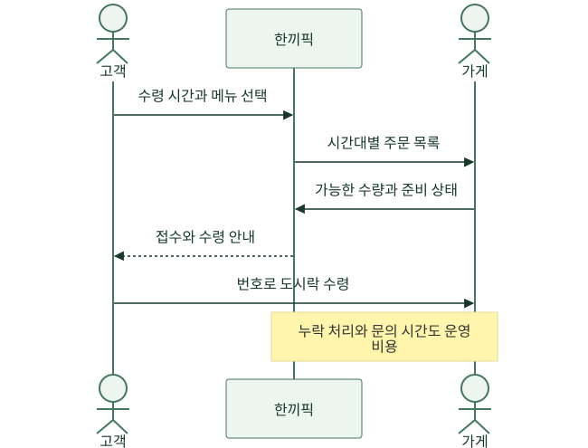

기획자 하린은 점심 줄을 보며 확신했습니다. “미리 주문하는 앱을 만들면 다들 쓰겠네요.” 개발자 민서는 화면부터 그리려 했습니다. 그런데 식당 사장 수진은 다른 말을 했습니다. “주문 받는 건 빨라요. 도시락을 한꺼번에 찾으러 오면 누구 것인지 찾느라 오래 걸려요.”
이 글은 가상의 주문 서비스 ‘한끼픽’이 아이디어에서 운영 가능한 사업을 찾아가는 이야기입니다. 인물·주문 수·비용은 사고 과정을 보여 주기 위한 설정이며 실제 업체의 성과나 수익 전망이 아닙니다. 기술이 무엇을 할 수 있는지보다 누구의 어떤 불편을 줄이면 계속 사용할 이유가 생기는지 따라갑니다.
1. 첫 월요일 — 줄이 길다는 사실과 원인은 달랐다
하린은 한 시간 동안 손님이 어디에서 기다리는지 관찰했습니다. 주문할 때보다 수령할 때 줄이 길었습니다. 도시락은 준비됐는데 이름을 다시 묻고 봉투를 찾는 시간이 걸렸습니다. 앱에서 주문만 빨리 받으면 주방과 수령대에 일이 더 몰릴 수도 있었습니다.
하린은 손님에게 원하는 기능 목록을 묻는 대신 방금 겪은 일을 물었습니다. 언제 줄을 섰는지, 늦어지면 무엇을 포기하는지, 지금은 어떻게 피하는지 들었습니다. 수진에게는 가장 힘든 시간과 잘못 전달된 주문을 처리하는 방법을 물었습니다. 사람들의 기대와 실제 행동을 구분하려는 질문이었습니다.
{kind=link}
그림을 본 민서는 처음 계획의 주문 버튼보다 수령 번호가 더 중요할 수 있다고 말했습니다. 하린은 “우리가 만들고 싶었던 앱”과 “사용자가 끝내고 싶은 일”을 분리해 적었습니다. 고객은 앱 사용 시간을 늘리려는 것이 아니라 점심을 제때 받아 가려는 사람이었습니다.
2. 첫 목요일 — 코드를 쓰기 전에 종이 번호표로 시험했다
팀은 며칠 동안 가게 한 곳에서 미리 받을 시간을 적고 번호표를 발급했습니다. 고객 신청은 간단한 폼으로 받고, 수진이 수기로 수량을 확인했습니다. 내부 작업은 불편했지만 고객이 미리 주문하고 정한 시간에 찾아오는 방식 자체를 받아들이는지 확인할 수 있었습니다.
이것을 최소 기능 제품이라고 부를 수도 있지만, 팀은 이름보다 검증할 가설을 분명히 했습니다. “손님이 앱을 좋아한다”가 아니라 “점심을 미리 예약할 기회가 있으면 실제로 예약하고 찾아오는가”였습니다. 신청 버튼을 누른 사람 수와 실제 수령한 사람 수는 다릅니다.
| 가설 | 작게 해 본 일 | 관측한 값 | 다음 판단 |
|---|---|---|---|
| 손님은 미리 주문할 것이다 | 한 가게에서 사전 신청 | 신청 후 실제 수령 여부 | 신청만 많으면 이유를 다시 질문 |
| 번호가 있으면 수령이 빠르다 | 종이 번호표 사용 | 수령대 대기와 오전 준비 시간 | 고객 시간과 가게 부담을 함께 비교 |
| 수진은 계속 운영할 수 있다 | 수작업으로 며칠 반복 | 누락·수정·문의에 쓴 시간 | 감당 못 하는 작업을 먼저 자동화 |
첫날은 반응이 좋았습니다. 둘째 날에는 예약하고 오지 않은 사람이 생겼습니다. 팀은 이를 실패를 숨겨야 할 사건으로 보지 않았습니다. 예약 시간을 잘못 이해했는지, 점심 일정이 바뀌었는지, 취소 방법을 못 찾았는지 확인했습니다. 예약 기능에는 취소와 미수령을 다루는 운영 규칙도 필요했습니다.
3. 둘째 주 — 고객과 돈을 내는 사람이 달랐다
손님은 기다림이 줄어서 좋아했습니다. 그런데 누가 서비스 비용을 내야 할까요? 손님은 기존에도 수수료 없이 도시락을 샀습니다. 수진은 주문 오류와 수령대 혼잡이 줄면 비용을 낼 수 있다고 했지만, 새 화면을 관리하는 시간이 늘면 곤란했습니다.
하린은 손님과 가게를 같은 ‘사용자’로 묶지 않았습니다. 고객에게 주는 가치와 비용을 부담할 사람의 가치를 따로 적었습니다. 가게에 도움이 되는지를 보려면 주문 수뿐 아니라 누락, 준비 시간, 고객 문의, 매장 업무의 변화를 봐야 했습니다.
{kind=link}

그림 크게 보기 ↗팀은 주문이 몰려도 가게가 감당할 수 있도록 시간대별 접수량을 제한했습니다. 플랫폼의 주문 수를 최대로 올리는 것과 가게·고객이 원하는 경험을 만드는 것이 항상 같지는 않았습니다. 수량 제한으로 당장 받은 주문은 줄었지만, 약속한 시간에 전달할 가능성을 높이는 선택이었습니다.
4. 셋째 주 — 주문이 늘수록 손해가 커질 수도 있었다
하린은 주문 백 건을 달성한 날 축하 메시지를 보냈습니다. 지후는 비용표를 열었습니다. 주문 한 건마다 받는 수수료보다 할인과 지원 비용이 더 크다면 주문 증가가 손실을 늘릴 수 있었습니다. 팀은 총 거래액과 회사가 실제로 얻는 수입을 구분했습니다.
아래는 이해를 위한 단순 가정입니다. 세금·환불 변동·실제 계약 조건을 모두 반영한 사업 계획은 아닙니다. 주문 1건의 가정 수입에서 주문 수에 따라 늘어나는 비용을 빼고, 남은 돈으로 고정비를 감당할 수 있는지 봅니다.
| 주문 한 건의 항목 | 가정 금액 |
|---|---|
| 서비스가 받는 수수료 | 500원 |
| 서비스가 부담하는 결제·메시지 비용 | 120원 |
| 건당 고객지원 비용 추정 | 80원 |
| 서비스가 부담하는 할인 | 200원 |
| 고정비를 감당하기 전 남는 금액 | 100원 |
500 − 120 − 80 − 200 = 100원입니다. 한 달 고정비를 100만 원으로 가정하면 이 단순 모형에서는 1만 건이 있어야 고정비와 같아집니다. 할인 부담이 400원이 되면 한 건당 남는 금액은 −100원입니다. 그 상태에서는 주문 수만 늘려 고정비를 해결할 수 없습니다.
수진의 이익도 별도로 봤습니다. 가게가 부담하는 포장비와 할인, 기존 매장 주문이 앱 주문으로 옮겨 온 비중을 빼고도 도움이 되는지 확인했습니다. 한끼픽의 수입이 늘었다고 가게의 성과도 좋아졌다고 말할 수는 없었습니다.
5. 넷째 주 — 쿠폰이 끝나자 사람들이 사라졌다
신규 고객 쿠폰을 뿌린 주에는 주문이 늘었습니다. 하린은 다음 달 광고비도 늘리려 했습니다. 하지만 쿠폰을 받은 고객이 다시 주문하는지 보니 그렇지 않은 사람이 많았습니다. 한 번 체험한 수와 계속 필요해서 쓰는 수가 달랐습니다.
팀은 같은 주에 처음 주문한 사람들을 묶어 다음 주 재주문을 확인했습니다. 이런 묶음을 코호트라고 부릅니다. 아래의 단순 예에서는 첫 주문 고객 100명 중 다음 주에도 주문한 사람이 25명입니다. 25%라는 값만으로 좋고 나쁨을 단정하지 않고, 휴일·메뉴·서비스 이용 기회와 비교했습니다.
{kind=link}

그림 크게 보기 ↗인터뷰에서 반복해서 나온 불만은 쿠폰 금액보다 수령 시각의 불확실성이었습니다. 팀은 할인 확대를 미루고 준비 완료 안내와 수령 번호 표시를 개선했습니다. 다음 집단의 재주문이 늘더라도 그 개선만의 효과라고 단정하지는 않았습니다. 가능한 비슷한 조건을 비교하고, 표본이 작다는 한계도 기록했습니다.
6. 두 달째 — 세 가게로 늘리기 전에 한 가게를 반복했다
하린에게 다른 지역의 가게 열 곳을 모집하자는 제안이 왔습니다. 하지만 현재 운영은 민서가 주문 누락을 수동으로 고치고 수진이 고객에게 직접 전화하는 덕분에 돌아가는 부분이 있었습니다. 사람의 특별한 노력으로 겨우 유지되는 흐름을 그대로 복제하면 팀이 먼저 지칠 수 있었습니다.
팀은 새 가게 한 곳을 추가해 이전 경험이 없는 사장님도 메뉴를 등록하고 주문을 처리할 수 있는지 봤습니다. 설명에 얼마나 시간이 걸리는지, 문의가 어디에서 생기는지, 같은 기능이 업종마다 다르게 필요한지 기록했습니다. 성장 전에 반복 가능한 운영 방법을 찾는 시험이었습니다.
{kind=link}

그림 크게 보기 ↗7. 세 달째 — 만들지 않을 기능을 정할 수 있게 됐다
한끼픽에는 아직 화려한 추천 화면이 없었습니다. 대신 고객은 수령할 시간을 알았고, 가게는 시간대별 수량을 조절했으며, 팀은 주문 한 건에서 무엇이 남는지 설명할 수 있었습니다. 실험이 끝날 때마다 기능이 늘어난 것은 아니었습니다. 필요 없다는 것을 알아내서 지운 아이디어도 많았습니다.
하린은 처음 문장을 고쳤습니다. “미리 주문하는 앱을 만들자”에서 “점심 수령의 불확실성을 줄이고, 가게가 감당할 수 있게 하자”로 바뀌었습니다. 이 문장 덕분에 다음 기능을 고를 기준이 생겼습니다. 지도, 쿠폰, 추천 중 무엇이 멋져 보이는지보다 지금 어느 문제를 해결해야 하는지 논의할 수 있었습니다.
이 글의 표와 계산은 하나의 가상 서비스에 대한 판단 연습입니다. 다른 서비스에서는 비용 구조와 구매 주기, 돈을 내는 사람이 달라집니다. 그래도 출발 질문은 남습니다. “누가 지금 어떤 불편을 겪으며, 우리의 방법을 실제로 반복해서 선택할까?” 그 답을 작은 행동으로 확인하는 동안 사업도 제품도 함께 구체화됩니다.